Simpler (Simplex solver) is an educational application that was created to facilitate the learning of linear programming as part of a bachelor's thesis focusing on the field of operations research.
The application offers two main functionalities:
All versions of Simpler can be obtained from the GitHub releases page under the following link. Using the latest available release is strongly recommended.
Setup begins after downloading the executable binary for your operating system described in the previous section.
Note that successful launch of the application is conditioned on having port 8080 free before running the binary.
The Windows executable binary is downloaded with the .exe suffix.
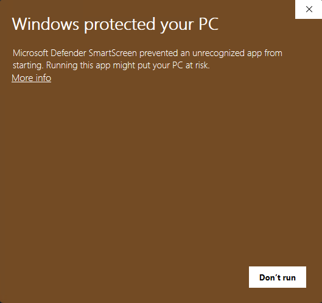
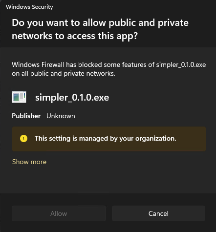
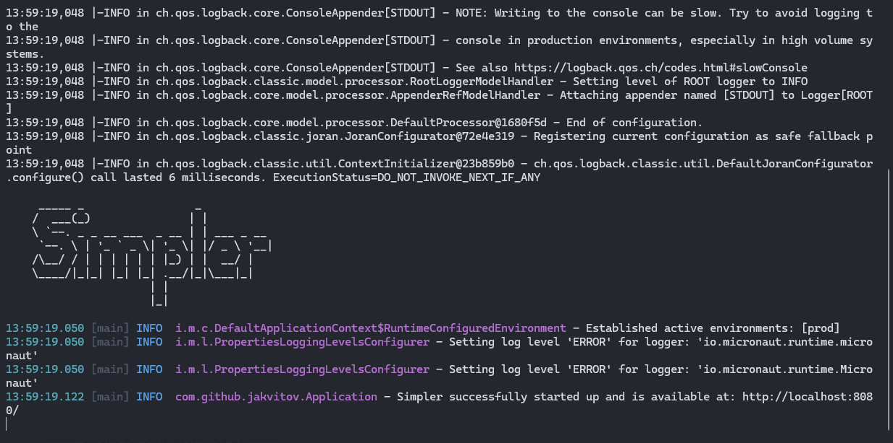
http://localhost:8080.CTRL + C.The macOS executable binary is downloaded without any suffix.
cd into the directory containing the downloaded binary.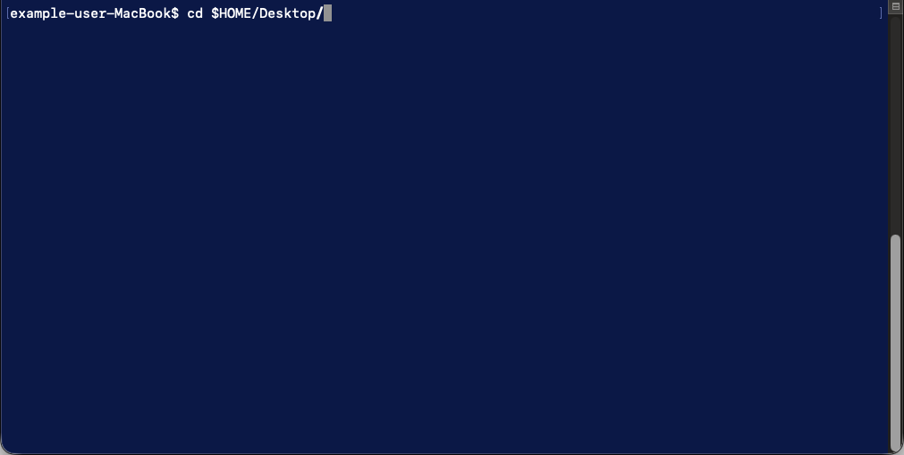
chmod +x ./your-binary-name.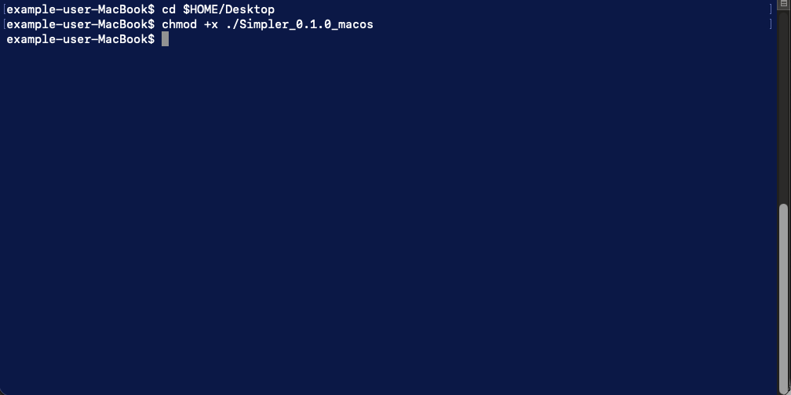
./your-binary-name.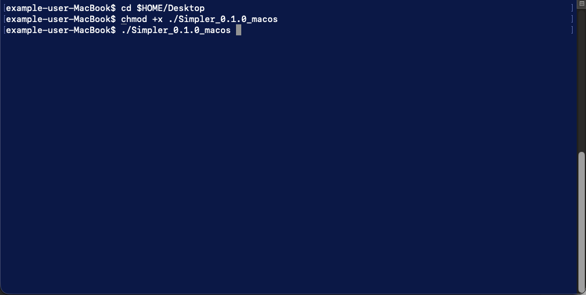
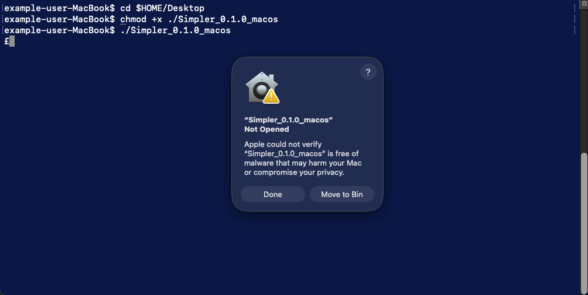
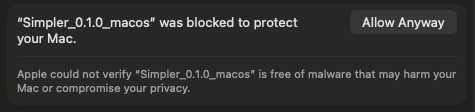
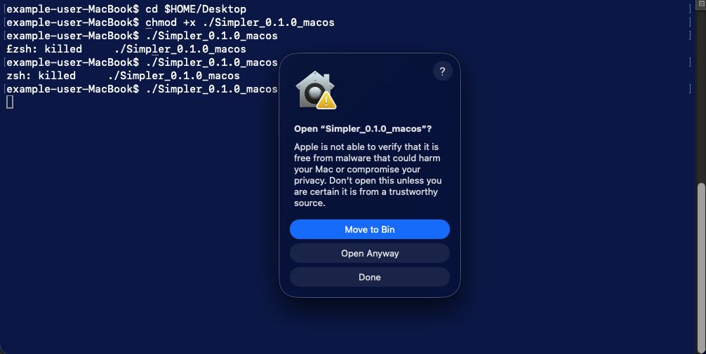
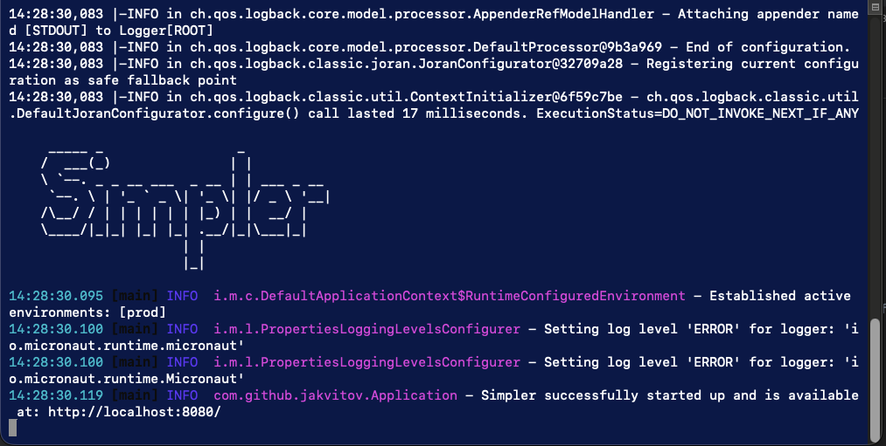
http://localhost:8080.Control + C.Simpler works mainly with rational numbers and displays the results as whole numbers or fractions. In all input forms (including MPS), numbers can be entered as:
1 or -41/50 or -5/99., like: 1.5No other number input formats are supported. For example, -0,55746 will trigger an error.
Floating-point numbers are transformed into rationals using their binary representation, which may result in precision loss. Usage of whole numbers or rationals is recommended.
The main input format for Simpler is MPS. The original MPS format is quite restrictive; therefore, for the convenience of users, Simpler ignores all row/column character restrictions and relies solely on keywords. Unknown keywords and sections are skipped and mostly do not trigger an error.
The encounter order of the sections is not strictly enforced.
The application supports only some of the original MPS-defined sections:
NAME must be defined and supports whitespace characters inside the problem name.ROWS must be defined and contain problem rows.COLUMNS must be defined and contain problem columns.BOUNDS are optional. Only one bounds set definition is allowed.RHS must be defined and only one RHS per problem is allowed.Comments in MPS inputs are supported and start with the # character. Everything between the first # character encountered and the end of the line is ignored. For example, the line: x_1 OBJ # 1
will be processed as x_1 OBJ.
#Simple LP example
#Simpler compatible MPS
NAME ExampleMps
ROWS
N OBJ
L C1
L C2
COLUMNS
x_1 OBJ 1
x_1 C1 1
x_1 C2 0
x_2 OBJ 1
x_2 C1 0
x_2 C2 1
RHS
RHS1 C1 2
RHS1 C2 2
ENDATA
Interactive input offers a simplified and user-friendly way of entering linear optimization problems. Just enter variable coefficients into the given table and hit the submit button. Resizing the input table can be achieved by clicking the + Variable, + Constraint, and - buttons. Accepted number formats are the same in both MPS and interactive input.
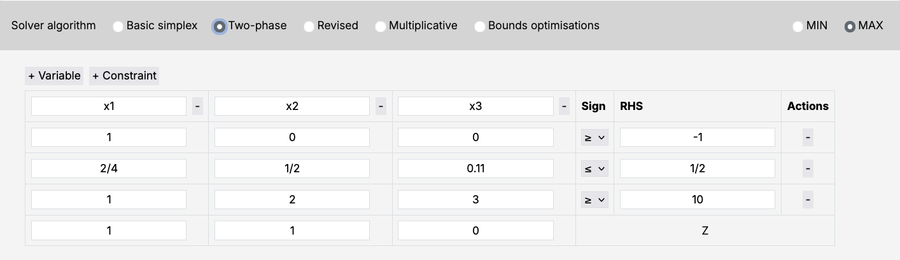
Simpler uses LaTeX formatting in all non-error outputs. This means that entering a variable name like x_1 will result in it being rendered as: $x_1$. Note that this applies to all nameable components of the MPS input format (for example, RHS names as well).
All solver-related parameters can be tweaked in the Settings section.
Each solver variant has two basic parameters. These include:
In order to store solution data, Simpler uses local IndexedDB in the browser. Such storage is not periodically cleaned by the browser and manual clearing is required in order to invalidate it.
This can be achieved through clicking the Clean storage button. Note that this might cause problems with reloading previously solved LPs.
Simpler offers detailed solution output for different algorithmic variants of the Simplex algorithm. You can choose your desired solver variant in the Solve LP section. Currently supported variants are:
Simpler caches backend inputs and outputs in the frontend IndexedDB. This may occasionally cause minor problems. The first step in troubleshooting is clicking the "Clean storage" button at the bottom of your screen. If that doesn't help and the problem persists, try restarting Simpler, opening it in a different browser, or opening it in private mode. Try to keep your application updated by downloading the newest version when it comes out on GitHub.
Reporting bugs helps Simpler advance and provide a better user experience. If any error occurs while using the application, a bug report link will appear. If you click it, it will either contain prefilled information about an application-caught error, or ask you to describe your problem if none was caught. In case of a prefilled bug report, you get a full overview of what is being sent, so that you can personally check for sensitive information.
Try to always include your Simpler version and the input that triggered the bug, so that it can be tracked down and repaired swiftly.